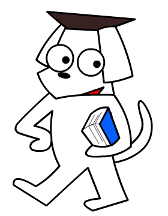
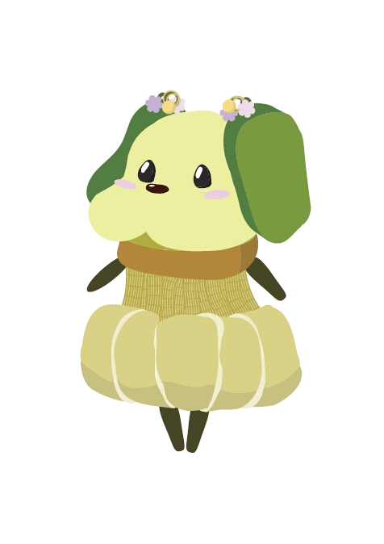

『ノトリュー』ノトリューは蛇の仙人（自称）です。空もちょっとだけ飛べます。じつは龍なのかもしれません。 森の主なのでご年配ではありますが、子どもたちとも仲良く接してくれます。 能登の「能」の字をモチーフに描きました。
「ノトロ」という「ト○ロ」に激似な名前のマスコットキャラクターして応募した作品。モリゾーとキッコロに激似なキャラクターに負けてあえなく落選。
『研犬』金沢大学IT教育推進プログラム主催の学生e-Learning作品コンテストに応募した作品。
『かがふわんこ』加賀麩をモチーフに制作しました。上から細工麩、生麩、車麩、すだれ麩、おつゆ麩です。
eAT'09アワードに応募した作品。